Updated supplied study solution — English only. આ નવો આપેલો ઉકેલ માત્ર અંગ્રેજીમાં છે; ભાષા બદલવાથી જવાબોનું ભાષાંતર થતું નથી. Unofficial model answers, not a GTU marking scheme; answers have not been independently verified.
Exam choice: Q1(a) and Q1(b) are common parts, shown once. The supplied HTML repeats their identical answers in both Q1(c) choice branches; both source occurrences are recorded in the audit. Choose one Q1(c) option as printed on the original paper.
Fluid Mechanics and Hydraulic Machinery
All printed question parts and every OR alternative are answered in English. These are explanatory study solutions aligned with the supplied papers and Semester III course notes—not an official GTU marking scheme.
The paper states that the English version is authentic; wording below follows it.
Question 1
Question wording, marks and expandable study solution
Q1(a)Explain surface tension with neat sketch.3 marks
Model answer · 3 marks
Surface tension σ is the tangential tensile force per unit length acting at a liquid interface (equivalently, interfacial energy per unit area for a simple interface). It arises from molecular cohesion and tends to reduce free-surface area, which is why a small liquid drop tends toward a spherical shape.
It is an interfacial force, not a pressure throughout the liquid. For an ideal spherical liquid drop with one interface, excess pressure is 4σ/d; a soap bubble has two interfaces and 8σ/d.
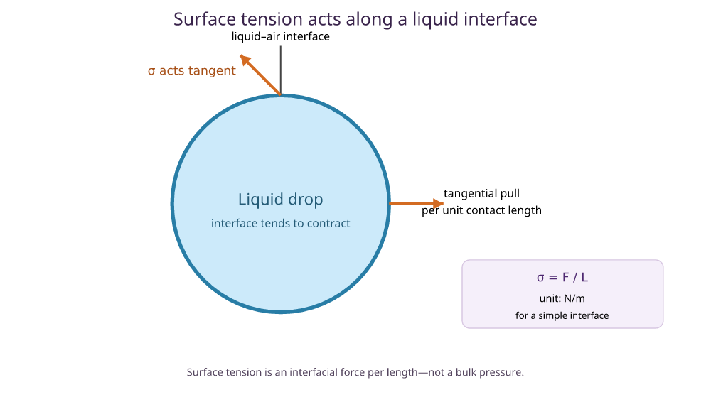
Q1(b)Explain impact of jet on moving curved vane when jet striking at the center.4 marks
Model answer · 4 marks
Let a jet of area a and velocity V strike the centre of a single curved vane moving in the jet direction at speed u. Assume the vane divides the stream symmetrically into two equal outlets; the transverse momentum components cancel. Let relative outlet speed W₂ = kW₁, with W₁ = V−u, and let β be measured from the backward direction of the incident jet.
Mass rate intercepted by one moving vane: ṁ = ρa(V−u)
Force in the direction of vane motion:
F = ṁ(V−Vw2) = ρa(V−u)²(1+k cosβ)
Power delivered = Fu
For a frictionless vane k≈1; real friction reduces relative outlet speed. The central strike and symmetric split are why side forces cancel. For a continuous series catching the full jet, use ṁ = ρaV instead; with the same angle convention Fx = ρaV(V−u)(1+k cosβ), and P = Fxu. The formula above is for one isolated moving vane.
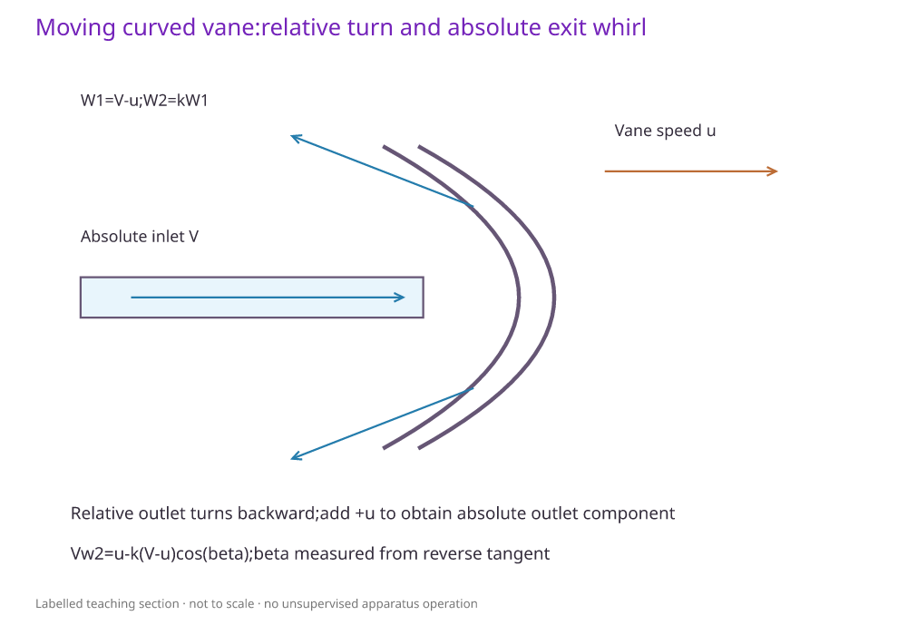
Q1(c)A differential manometer containing mercury as manometric fluid is connected between inlet and throat of the horizontal venturimeter, through which an oil having specific gravity of 0.88 is flowing. If difference in mercury level in manometer is recorded as 250 mm, calculate pressure difference in Pascal.7 marks
Model answer · 7 marks
For two taps at the same elevation, the pressure difference is due to the difference in manometric and flowing-fluid columns. Take SGHg = 13.6, SGoil = 0.88, h = 0.250 m, ρw = 1000 kg/m³ and g = 9.81 m/s².
= ρwg(SGHg − SGoil)h
= 1000(9.81)(13.6−0.88)(0.250)
= 31,195.8 Pa ≈ 31.20 kPa
The inlet pressure exceeds throat pressure; the reported value is the differential pressure magnitude.
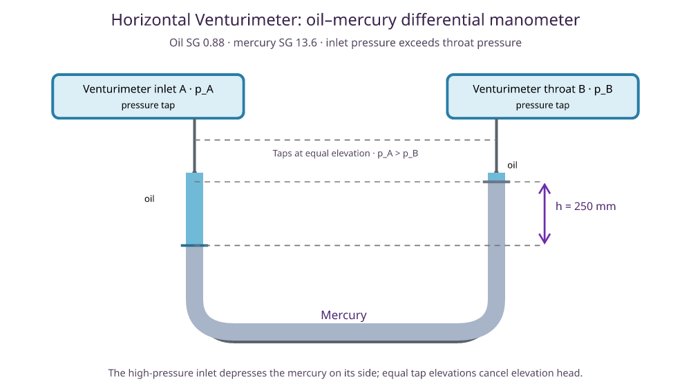
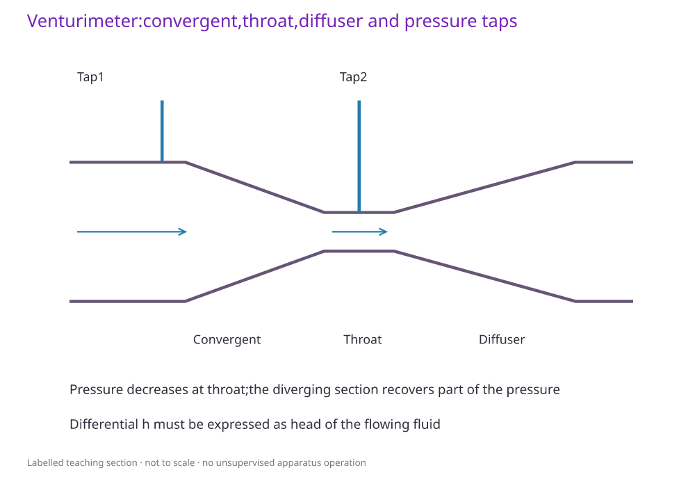
Q1(c) — ORState and prove Pascal's law.7 marks
Model answer · 7 marks
Law: a pressure increment imposed on a confined fluid at rest is transmitted equally throughout the fluid and to the containing walls. Total hydrostatic pressure may still differ with elevation.
Proof using a small fluid wedge: let the inclined face have area A and angle θ to horizontal; its projected horizontal and vertical areas are A sinθ and A cosθ. Let pn act on the inclined face and px, pz on the other two faces. Neglect wedge weight in the infinitesimal limit.
Vertical force balance: pzA cosθ = pnA cosθ ⇒ pz = pn
Thus pressure at a point is isotropic. Hydrostatic balance gives p₂−p₁ = ρg(z₁−z₂). Adding the same external increment to the confined liquid leaves this elevation relation unchanged, hence Δp₂ = Δp₁. In a hydraulic press at equal elevations, F₁/A₁ = F₂/A₂.
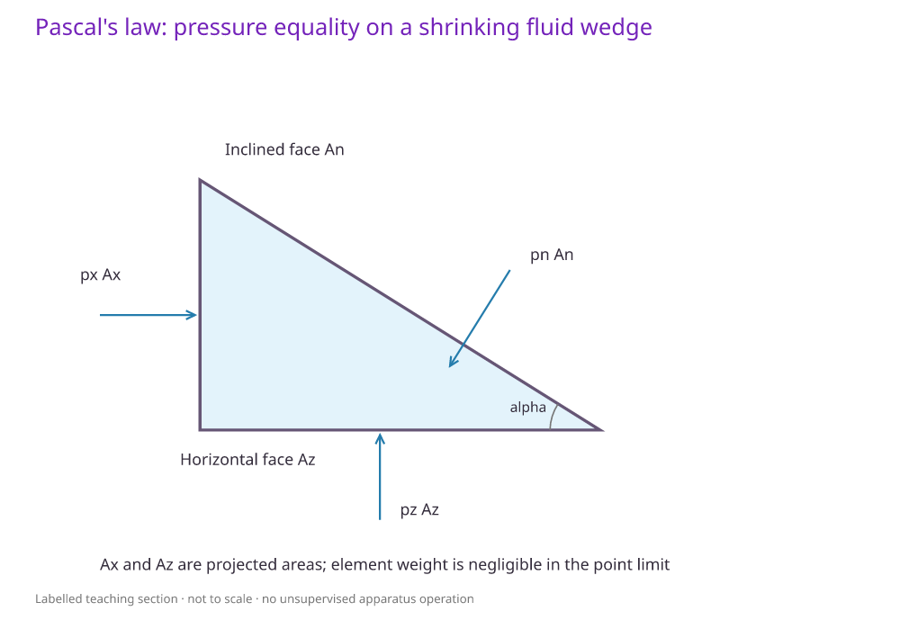
Question 2
Question wording, marks and expandable study solution
Q2(a)Differentiate between ideal fluid and real fluid.3 marks
Model answer · 3 marks
| Ideal fluid | Real fluid |
|---|---|
| Analytical model treated as incompressible and inviscid (zero viscosity). | Has viscosity; density may also change where compressibility matters. |
| No shear stress or viscous friction loss in the ideal model. | Shear stress and frictional energy loss occur in moving flow. |
| Useful for simplified derivations such as ideal Bernoulli flow. | All actual liquids and gases are real; measured behavior depends on state and flow conditions. |
An ideal fluid is a model, not a claim that a real liquid has exactly zero viscosity.
Q2(b)Define: 1. Compressible flow, 2. unsteady flow4 marks
Model answer · 4 marks
- Compressible flow: a flow in which density change is significant for the analysis, typically because pressure/temperature changes appreciably. Incompressible is an approximation of nearly constant density, not a different fluid.
- Unsteady flow: at a fixed location, one or more properties such as velocity, pressure or density vary with time; mathematically, a temporal derivative such as ∂V/∂t is non-zero. A draining tank and pump start-up are examples.
Compressible describes density behavior; unsteady describes time variation. They are independent classifications.
Q2(c)State and derive the continuity equation.7 marks
Model answer · 7 marks
Statement: mass is conserved. For steady flow through a stream tube, mass flow entering equals mass flow leaving.
- Consider a short time interval Δt and one inlet section (1) and one outlet section (2).
- Mass entering = ρ₁A₁V₁Δt; mass leaving = ρ₂A₂V₂Δt, where V is the mean velocity normal to the section.
- For steady flow with no accumulation inside the control volume, equate these masses and divide by Δt:
For an incompressible fluid ρ₁ = ρ₂ = ρ:
This assumes no side branches or leakage between sections; with multiple inlets/outlets, sum all mass flow rates algebraically.
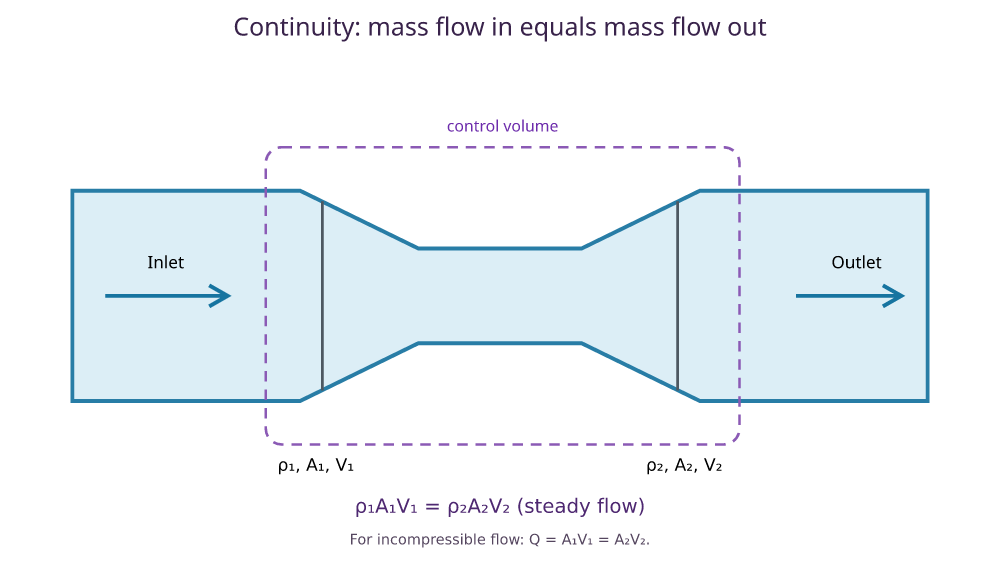
Q2(a) — ORState limitation of piezometer.3 marks
Model answer · 3 marks
- It measures only positive gauge pressure of a liquid; it cannot measure gas pressure or vacuum/negative gauge pressure.
- For high pressure the required liquid column would be impractically tall.
- It is unsuitable where the flowing liquid is volatile, toxic, very viscous, or where capillary/meniscus and reading effects are significant.
- It gives pressure at one tap, not a direct differential reading between two points.
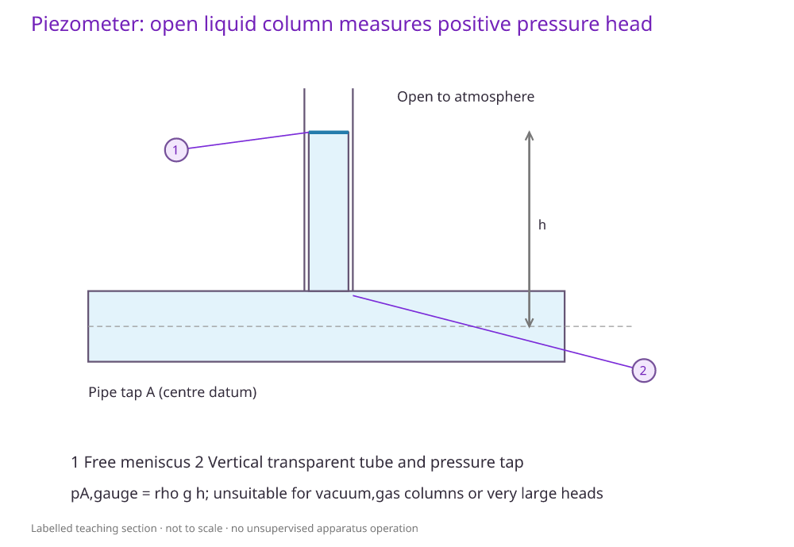
Q2(b) — ORWrite Bernoulli's equation. Also write assumption, and limitations of Bernoulli's theorem.4 marks
Model answer · 4 marks
For ideal steady incompressible flow along a streamline:
The terms are pressure head, velocity head and elevation head.
Assumptions: steady flow; constant density; negligible viscosity/energy loss; no pump/turbine work or heat addition between sections; applied along a streamline (everywhere only for irrotational flow); mean velocity and kinetic-energy factor α≈1.
Limitations: ideal Bernoulli alone is not valid across significant friction, turbulence-related losses, pumps/turbines, heat transfer, shocks, or materially compressible flow. For real systems use the extended energy equation with pump head, turbine head and head loss.
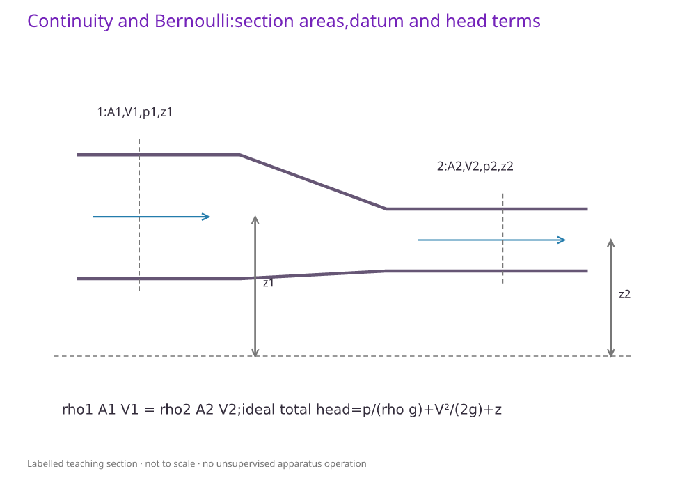
Q2(c) — ORAn orifice of 40 mm diameter is discharging water from a tank. If the water level in tank is 4 m above the top edge of the orifice, determine the discharge through the orifice. Take co-efficient of discharge for the orifice as 0.6.7 marks
Model answer · 7 marks
Assume a sharp-edged orifice, a large tank (negligible free-surface velocity), and g = 9.81 m/s². The stated 4 m is measured above the top edge; for a vertical circular opening the centreline head is H = 4.00 + 0.020 = 4.020 m.
Vth = √(2gH) = √[2(9.81)(4.020)] = 8.8810 m/s
Q = Cd A Vth
= 0.60(0.00125664)(8.8810)
= 0.006696 m³/s = 6.696 L/s ≈ 6.70 L/s
If the conventional approximation takes the given 4 m directly as head to the orifice centre, Q = 6.679 L/s; the difference is under 0.3%.

Question 3
Question wording, marks and expandable study solution
Q3(a)Explain following Hydraulic coefficient: (1) Co efficient of contraction, (2) Coefficient of velocity, (3) Coefficient of discharge.3 marks
Model answer · 3 marks
- Cc = Ac/Ao: vena-contracta jet area divided by orifice area.
- Cv = Vactual/√(2gH): actual jet speed divided by the ideal speed from Torricelli’s theorem.
- Cd = Qactual/[Ao√(2gH)]: actual discharge divided by ideal discharge.
For a sharp-edged orifice under the same head, Cd = CcCv; contraction and velocity loss both reduce actual flow.
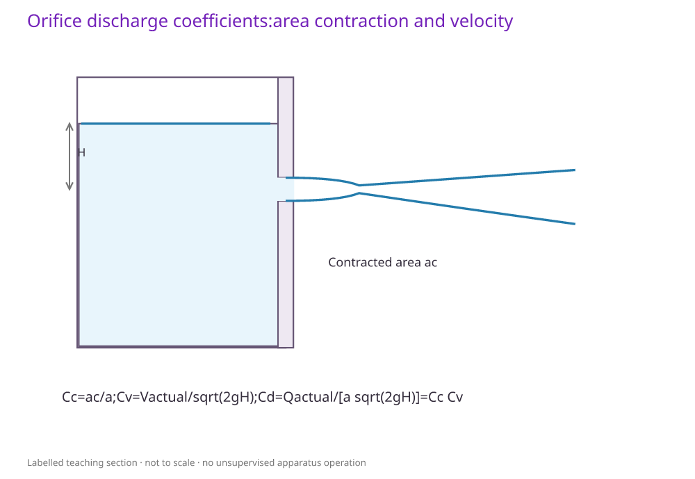
Q3(b)What is priming? Explain different methods of priming.4 marks
Model answer · 4 marks
Priming is filling the casing and suction pipe of an ordinary centrifugal pump with liquid and expelling air before start-up. An air-filled pump cannot create sufficient suction head because air is much less dense than the pumped liquid.
- Manual filling and venting: pour liquid into the casing through a priming opening while allowing air to escape; a foot/check valve retains the column.
- Vacuum priming: a vacuum pump or air ejector removes air so liquid rises from the source into the casing.
- Flooded suction: locate the pump below the source liquid level so casing and suction remain full.
- Self-priming design: a purpose-designed casing retains a liquid reserve and recirculates it to evacuate air. This is not a property of every centrifugal pump.
Prime and operate only according to the pump’s approved procedure; never run a conventional pump dry.
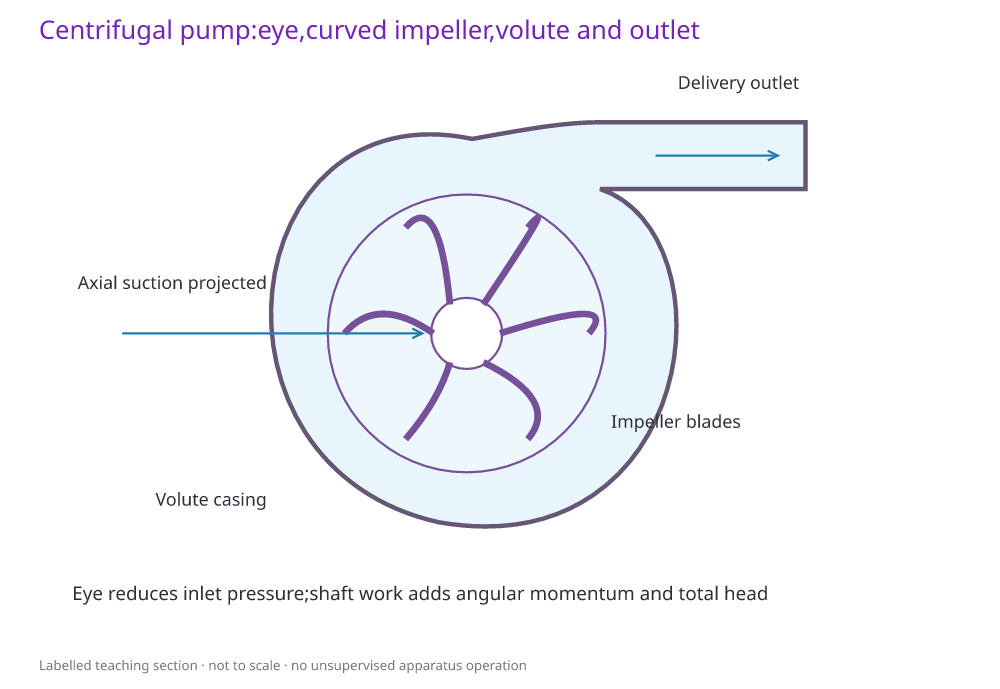
Q3(c)What is Reynold’s Number? Explain Reynold’s experiment with sketch.7 marks
Model answer · 7 marks
Reynolds number is a dimensionless ratio of inertial to viscous effects. For a circular pipe:
Here V is mean pipe velocity, D is inside diameter, μ is dynamic viscosity and ν = μ/ρ is kinematic viscosity.
Experiment: feed water from a constant-level tank through a smooth transparent pipe; introduce a fine dye filament at the inlet and regulate discharge with a valve. At low flow the dye remains a straight filament (laminar). With increasing flow it wavers and then diffuses across the pipe (transition/turbulent). Measure Q and D, find V = Q/(πD²/4), and calculate Re. For ordinary circular-pipe flow, Re below about 2300 is commonly laminar; 2300–4000 transitional; above about 4000 commonly turbulent. Disturbances and entrance conditions affect transition.
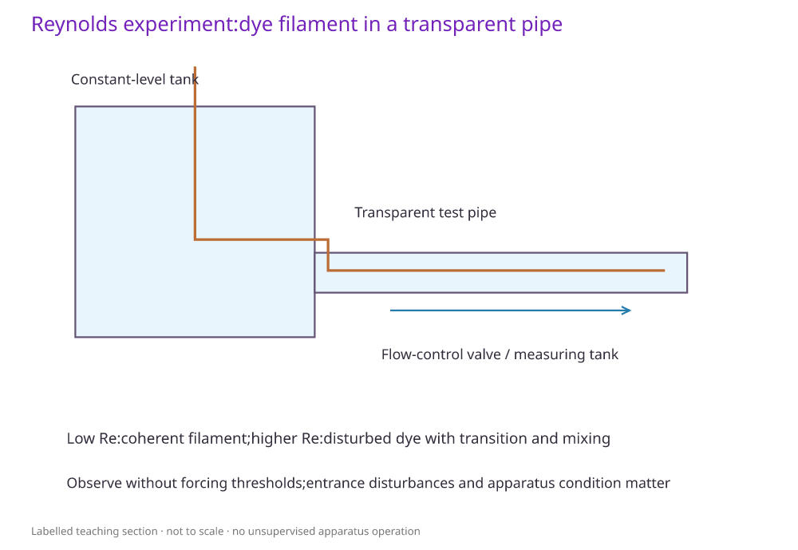
Q3(a) — ORExplain Horizontal Venturimeter with neat sketch.3 marks
Model answer · 3 marks
A horizontal Venturimeter has a converging inlet, short throat and gradually expanding diffuser in a horizontal pipe. Incompressible continuity makes velocity rise from inlet to throat; Bernoulli then gives lower static pressure at the throat. A differential manometer connects the pressure taps. For known areas and Cd, discharge follows:
Because both sections are at the same elevation, the elevation-head terms cancel. The diffuser recovers part of the pressure head.
Q3(b) — ORWrite use of air-vessel in reciprocating pump with neat sketch.4 marks
Model answer · 4 marks
An air vessel is a pressure chamber near the reciprocating-pump cylinder containing an air cushion over liquid.
- During a stroke interval when cylinder delivery exceeds line-average demand, surplus liquid enters the vessel and compresses the air.
- When instantaneous delivery falls, the compressed air expands and returns liquid to the pipe.
- The suction-side vessel similarly supplies part of the fluctuating cylinder demand.
- Result: pipeline flow becomes more uniform; acceleration head, friction loss, required work and separation risk in long pipes can be reduced.
It smooths pulsation rather than eliminating all flow variation. The vessel and gas charge must be rated and maintained for the operating pressure.
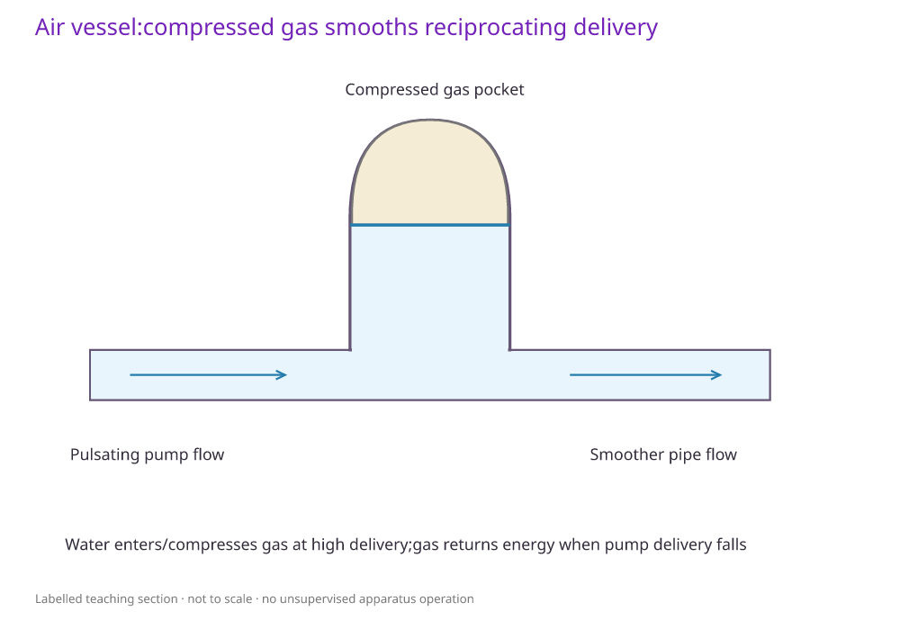
Q3(c) — ORWater is flowing through 200 mm diameter and 500 m long pipe at the rate of 0.03 m3/s. If friction factor f = 0.005, determine head loss due to friction.7 marks
Model answer · 7 marks
Use Darcy–Weisbach with the course Darcy factor convention f = fD; take g = 9.81 m/s².
V = Q/A = 0.03/0.031416 = 0.95493 m/s
hf = fD(L/D)V²/(2g)
= 0.005(500/0.20)(0.95493²)/(2×9.81)
= 0.58097 m ≈ 0.581 m
If the book’s f were instead a Fanning factor, multiply by 4 (2.324 m); do not apply both conventions at once.
Assumption / convention: Assumes the printed friction factor 0.005 is Darcy fD, following the supplied course notes.
Question 4
Question wording, marks and expandable study solution
Q4(a)Describe working of Prandtl’s pitot tube with neat sketch.3 marks
Model answer · 3 marks
A Prandtl (Pitot-static) tube measures local flow speed from the difference between stagnation pressure and static pressure.
- The forward-facing opening brings the fluid to rest at a stagnation point and senses total pressure.
- Small side holes, aligned with the flow, sense static pressure.
- A differential manometer/transducer measures Δp = p0 − p.
- For an incompressible liquid with negligible losses, Bernoulli gives V = √(2Δp/ρ). If a same-liquid manometer reads head h, V = √(2gh); apply the appropriate density correction for a different manometric fluid.
Align the probe with the flow and use its calibration; blockage, turbulence and misalignment affect readings.
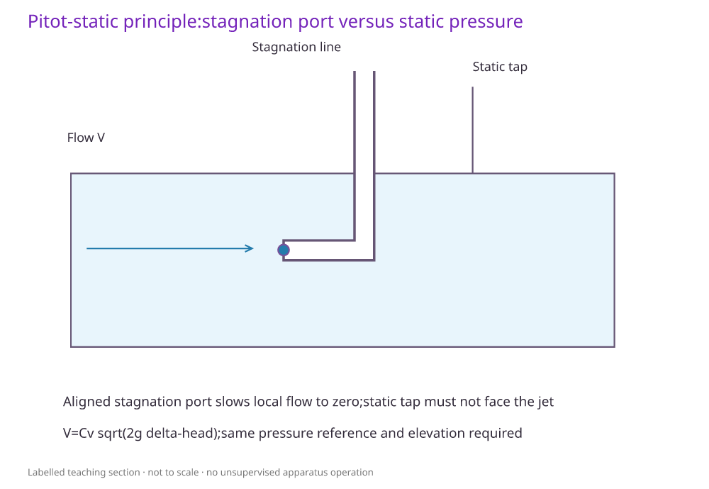
Q4(b)Write difference between impulse and reaction turbine.4 marks
Model answer · 4 marks
| Impulse turbine | Reaction turbine |
|---|---|
| Head is converted mainly to a free jet before it reaches the runner; runner passages are approximately at atmospheric pressure. | Water remains pressure-filled through the runner; pressure changes across the runner as it produces work. |
| Runner receives energy chiefly from change in jet momentum. | Runner receives energy from both pressure and velocity/momentum changes. |
| May use a nozzle and spear; casing contains splash. No draft tube. | Uses a pressure casing and usually a draft tube to recover part of outlet velocity head. |
| Pelton is the common high-head, low-flow example. | Francis (mixed-flow) and Kaplan (axial-flow) are common examples. |
Q4(c)A centrifugal pump discharges water at a rate of 3000 liter per second with a pressure head of 20 meter. If overall efficiency of the pump is 75%, determine power (in kW) required to run the pump.7 marks
Model answer · 7 marks
Assume the stated 20 m is pump head and water density is 1000 kg/m³. Convert discharge: Q = 3000 L/s = 3.00 m³/s.
ηo = water power / input power
Input power = 588.6/0.75 = 784.8 kW
Q4(a) — ORDifferentiate between a notch and a weir.3 marks
Model answer · 3 marks
| Notch | Weir |
|---|---|
| An opening of prescribed shape cut in a thin plate, commonly fitted in the side of a small tank/channel. | A barrier or raised crest across an open channel over/through which water flows. |
| Used mainly to measure relatively small discharges in laboratory or small-flow work. | Used to measure/control larger open-channel flow and may also raise upstream level. |
| Examples: rectangular, triangular (V-notch) and trapezoidal. | Examples: sharp-crested, broad-crested, ogee and rectangular weir. |
| Head is measured upstream above the notch crest, with approach conditions considered. | Head is measured upstream above the weir crest; crest shape and approach conditions determine calibration. |
Q4(b) — ORWrite difference between Francis turbine and Kaplan turbine.4 marks
Model answer · 4 marks
| Francis turbine | Kaplan turbine |
|---|---|
| Reaction, mixed-flow turbine: water enters runner mainly radially inward and leaves approximately axially. | Reaction, axial-flow propeller-type turbine: water passes substantially axially through runner. |
| Commonly used for medium heads and moderate discharges. | Commonly used for low heads and high discharges. |
| Runner has curved fixed blades; flow is directed by adjustable guide vanes. | Runner blades have adjustable pitch; guide vanes are also adjustable on a Kaplan turbine (double regulation). |
| Spiral casing and draft tube are used. | Large passage/casing and draft tube are used; adjustable blades help maintain performance over varying loads. |
Actual ranges overlap; selection also depends on specific speed, cavitation setting and manufacturer curves.

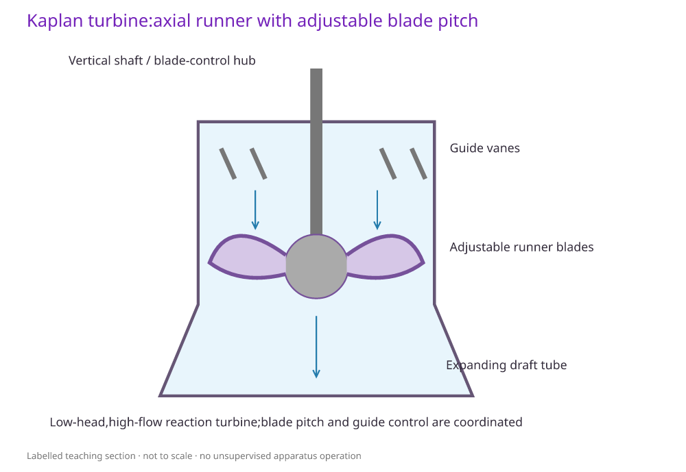
Q4(c) — ORDetermine the specific speed of a pump which operates at 900 rpm, delivers water at a rate of 800 liters per second, and develops a pressure head of 25 meters.7 marks
Model answer · 7 marks
Use the metric pump-specific-speed convention Ns,p = N√Q/Hm3/4, with N in rpm, Q in m³/s and head in metres.
Ns,p = 900√0.800/(250.75)
= 900(0.89443)/11.18034
= 72.0 in this metric convention
Specific speed is a comparison index, not the pump’s actual rpm; always state the unit convention.
Question 5
Question wording, marks and expandable study solution
Q5(a)Explain impact of jet on a moving flat plate held normal to the direction of jet.3 marks
Model answer · 3 marks
Let a jet of area a, speed V and density ρ strike a single flat plate normally while it moves in the jet direction at speed u (u < V). Water leaves sideways, so its absolute axial velocity becomes u.
Axial momentum change per second gives force:
F = ṁ(V−u) = ρa(V−u)²
Power delivered to the plate = Fu
Force acts in the direction of plate motion. For a stationary plate set u = 0 and recover F = ρaV². A continuous series of plates intercepts the full jet and uses ṁ = ρaV instead.
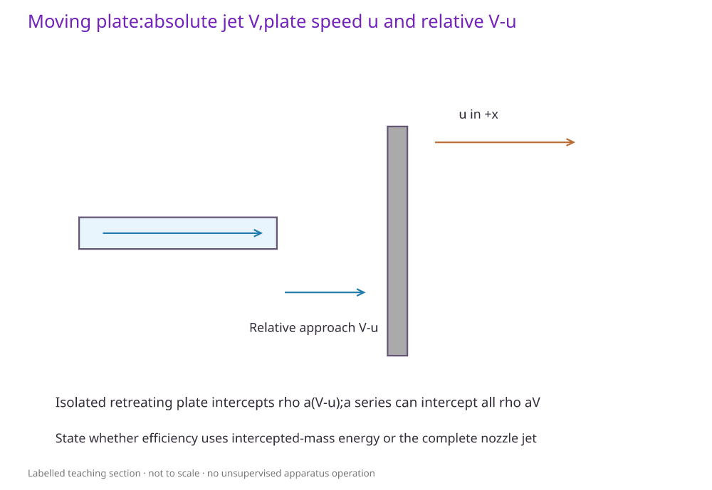
Q5(b)Determine the force exerted by a jet of water of diameter 85 mm on a stationery flat plate, when the jet strikes the plate normally with a velocity of 30 m/s.4 marks
Model answer · 4 marks
Assume ρ = 1000 kg/m³ and the jet is turned sideways by the stationary plate.
ṁ = ρaV = 1000(0.0056745)(30) = 170.24 kg/s
F = ṁ(V−0) = ρaV²
= 1000(0.0056745)(30²) = 5107 N ≈ 5.11 kN

Q5(c)Turbine run at 40 m head and at speed of 300 rpm. If discharge is 8000 liter per second and efficiency is 86 %, find power and specific speed of turbine.7 marks
Model answer · 7 marks
Assume η = overall turbine efficiency, ρ = 1000 kg/m³, g = 9.81 m/s², and treat the stated head as net head because no waterway loss is given; use P in kW, H in m and N in rpm for metric turbine specific speed.
Water power = ρgQH = 1000(9.81)(8)(40) = 3139.2 kW
Output power P = 0.86(3139.2) = 2699.7 kW ≈ 2.700 MW
Ns = N√P/H5/4
= 300√2699.712/401.25 = 154.95 (metric convention)
Specific speed is not dimensionless in this convention; state the power and head units when reporting it.
Q5(a) — ORExplain impact of a jet on a stationery curved vane when jet strikes at centre.3 marks
Model answer · 3 marks
Take x along a jet of area a, speed V and mass rate ṁ = ρaV. A stationary curved vane struck at its centre divides the jet symmetrically. If the outlet relative speed is kV and β is measured from the reverse jet direction, each outlet has x-component −kV cosβ; transverse components cancel.
= ρaV²(1 + k cosβ)
For an ideal lossless vane k = 1; a stationary vane has force but zero shaft power because its speed is zero. Draw the velocity directions before applying the momentum equation so the sign is clear.
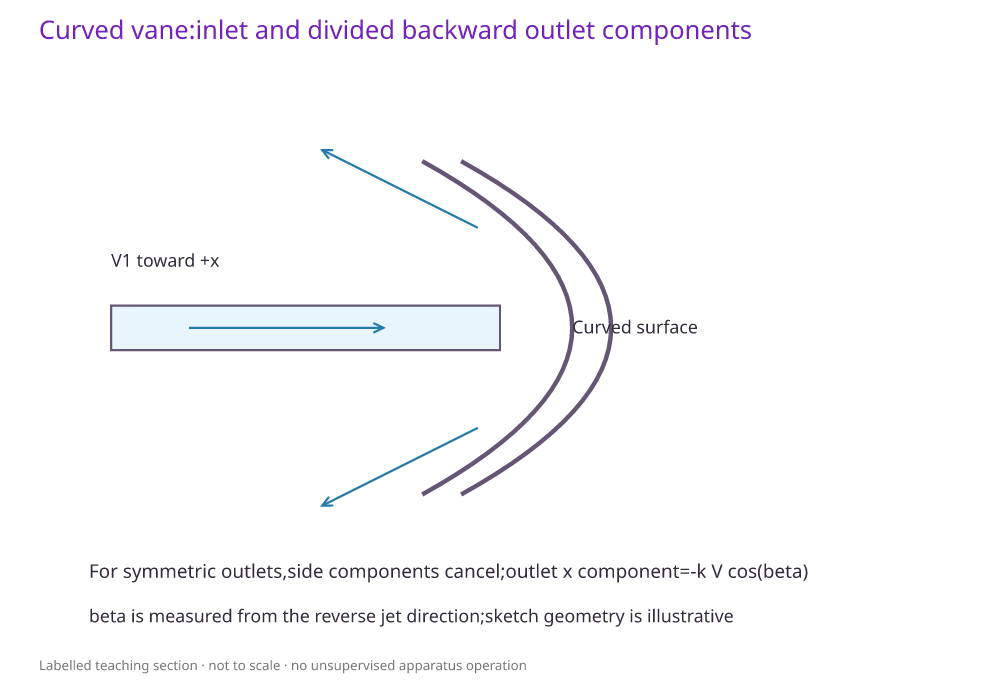
Q5(b) — ORA jet of water of diameter 10 cm strikes a flat plate normally with a velocity of 15 m/s. The plate is moving with a velocity of 6 m/s in the direction of jet and away from the jet. Find force exerted by the jet on the plate.4 marks
Model answer · 4 marks
Assume a single moving plate, ρ = 1000 kg/m³ and sideways deflection of the intercepted water.
Relative speed V−u = 15−6 = 9 m/s
ṁ intercepted = ρa(V−u)
F = ρa(V−u)² = 1000(0.0078540)(9²)
= 636.2 N in the direction of plate motion
Q5(c) — ORDiscuss construction and working of pelton wheel turbine using neat sketch.7 marks
Model answer · 7 marks
A Pelton wheel is an impulse turbine for high head and comparatively low discharge.
Construction: a penstock supplies a nozzle fitted with a spear/needle; the jet is directed tangentially onto a runner with double-cup buckets and a central splitter. Runner and shaft are supported by bearings inside a ventilated splash casing; a free outlet returns water to the tailrace. A deflector/governor controls the jet/load response.
Working:
- The nozzle converts head into a high-velocity free jet.
- The jet strikes a bucket splitter and divides into two streams.
- Curved bucket faces turn the streams through a large angle, changing their tangential momentum.
- Momentum change creates force and torque on the runner.
- The runner drives the shaft/generator; water leaves at approximately atmospheric pressure and drains freely.
- The spear adjusts flow and the deflector can divert the jet during load changes; control transients to avoid penstock surge.
Pelton has no pressure-filled runner or draft tube; a reaction turbine such as Francis/Kaplan uses a draft tube.